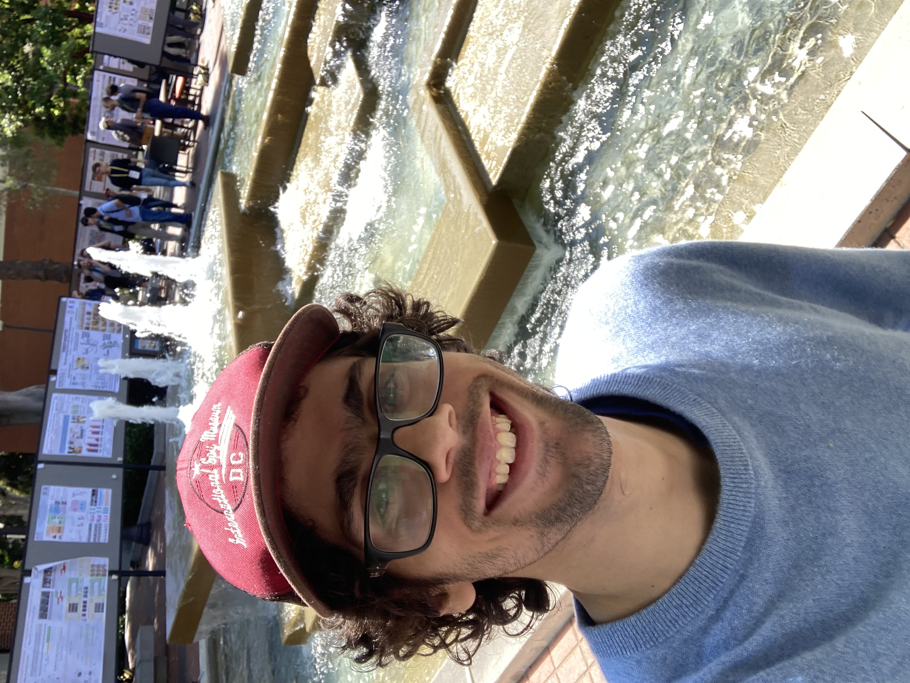
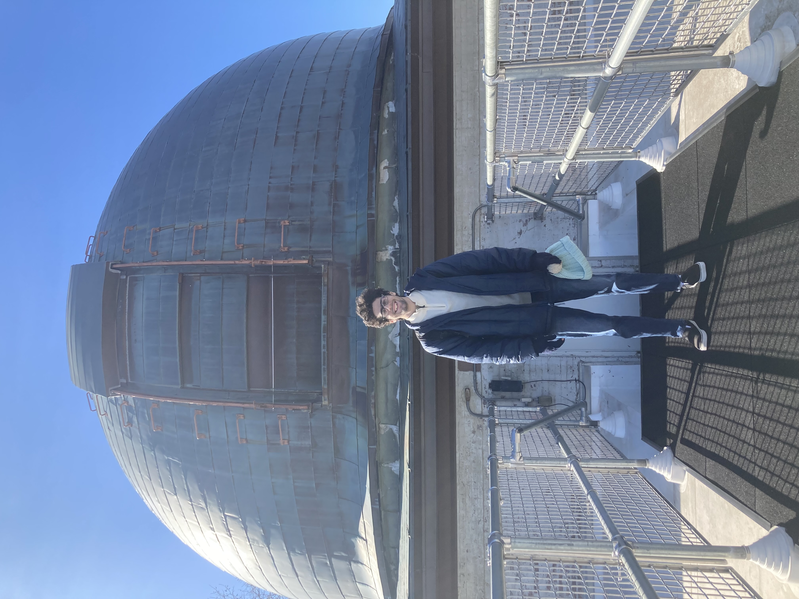

$ Eddie Berman / About / Photos (Back)
A more complete list of photos :-), and with backstories

Watching the eclipse with Jake and Beck

RSS 2025 EquiSystems workshop, presenting an early version of EquiUQ. Visited George and Caltech while I was in LA!

COLM 2024 with Luisa, Jake, and Federico. Jake showed us around Philly :)

SF trip after NeurIPS 2024 in Vancouver, where I stayed with John Yang and Jake and talked about Julia (the programming language). Andy showed us around SF and took us to Fort Mason.

HackMIT with Luisa, Ryan, Zack, and Jake. We made graph paper

Post my invited talk at the AstroAI seminar at Harvard CfA. Jake and Luisa came to support. I was fortunate enough to intern at the CfA that summer, what a magical place!

Selfie Robin took at NeurIPS 2025 in San Diego, Bo showed Purvik, Haibo, Boce, and I around UCSD and the surrounding beach while we were there. Stayed with Luisa, Jake, Beck, and Noah, and got to catch up with Andy and Caden. It was also nice seeing Marco, and meeting a lot of new friends! The GLL lab dinner was crazy good vibes too

NYC trip to see family, stayed with Akul for the night!

AAS convention in Baltimore for work with Jacqueline on correlation functions. While there I went to a Washington Capitals game during Ovi's great chase (he didn't score but they won 3-0 over Anaheim) and visited the Library of Congress for Sofi

Another NeurIPS 2024 picture with Jake and John Yang in Vancouver!

Another COLM 2024 picture, this one with David! Eating our Philly grub (except I meal prepped I have allergies)

Waterfall with Cory, ft. one certified beauty